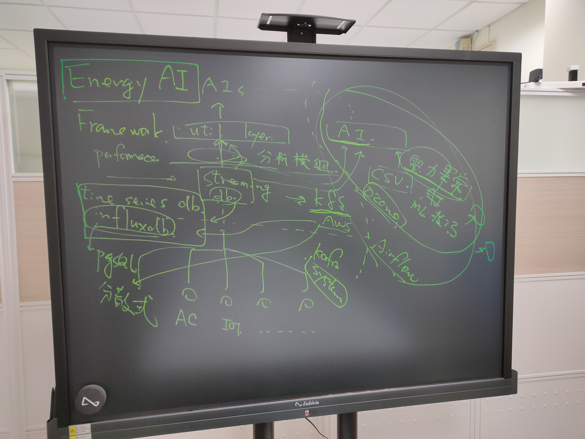

csie-proj_114
- git repo: https://github.com/NCKU-CCS/csie-proj_114
- test env: https://killercoda.com/csie-proj114

這本手冊由 114 屆專題生共同編輯
install mdbook
cargo install mdbook
mdbook build
slide: https://docs.google.com/presentation/d/1ob96PoG-oqNVKN8I-blmYdaf3njAoY7SbCDEcI1Qq-s
Cgroupv1
有多個控制器，可以針對不同的資源進行管理（memory,CPU...）
~$ mount -t cgroup
cgroup on /sys/fs/cgroup/systemd type cgroup (rw,nosuid,nodev,noexec,relatime,xattr,name=systemd)
cgroup on /sys/fs/cgroup/freezer type cgroup (rw,nosuid,nodev,noexec,relatime,freezer)
cgroup on /sys/fs/cgroup/pids type cgroup (rw,nosuid,nodev,noexec,relatime,pids)
cgroup on /sys/fs/cgroup/perf_event type cgroup (rw,nosuid,nodev,noexec,relatime,perf_event)
cgroup on /sys/fs/cgroup/hugetlb type cgroup (rw,nosuid,nodev,noexec,relatime,hugetlb)
cgroup on /sys/fs/cgroup/cpu,cpuacct type cgroup (rw,nosuid,nodev,noexec,relatime,cpu,cpuacct)
cgroup on /sys/fs/cgroup/blkio type cgroup (rw,nosuid,nodev,noexec,relatime,blkio)
cgroup on /sys/fs/cgroup/memory type cgroup (rw,nosuid,nodev,noexec,relatime,memory)
cgroup on /sys/fs/cgroup/net_cls,net_prio type cgroup (rw,nosuid,nodev,noexec,relatime,net_cls,net_prio)
cgroup on /sys/fs/cgroup/cpuset type cgroup (rw,nosuid,nodev,noexec,relatime,cpuset)
cgroup on /sys/fs/cgroup/rdma type cgroup (rw,nosuid,nodev,noexec,relatime,rdma)
cgroup on /sys/fs/cgroup/devices type cgroup (rw,nosuid,nodev,noexec,relatime,devices)
在memory中新增名字為democgv1的cgroup
~$ mkdir /sys/fs/cgroup/memory/democgv1
自動產生好控制資源 (Memory) 時所需要的組態檔案
~$ ls -l /sys/fs/cgroup/memory/democgv1
total 0
-rw-r--r-- 1 root root 0 Sep 29 13:39 cgroup.clone_children
--w--w--w- 1 root root 0 Sep 29 13:39 cgroup.event_control
-rw-r--r-- 1 root root 0 Sep 29 13:39 cgroup.procs
-rw-r--r-- 1 root root 0 Sep 29 13:39 memory.failcnt
--w------- 1 root root 0 Sep 29 13:39 memory.force_empty
-rw-r--r-- 1 root root 0 Sep 29 13:39 memory.kmem.failcnt
-rw-r--r-- 1 root root 0 Sep 29 13:39 memory.kmem.limit_in_bytes
-rw-r--r-- 1 root root 0 Sep 29 13:39 memory.kmem.max_usage_in_bytes
-r--r--r-- 1 root root 0 Sep 29 13:39 memory.kmem.slabinfo
-rw-r--r-- 1 root root 0 Sep 29 13:39 memory.kmem.tcp.failcnt
-rw-r--r-- 1 root root 0 Sep 29 13:39 memory.kmem.tcp.limit_in_bytes
-rw-r--r-- 1 root root 0 Sep 29 13:39 memory.kmem.tcp.max_usage_in_bytes
-r--r--r-- 1 root root 0 Sep 29 13:39 memory.kmem.tcp.usage_in_bytes
-r--r--r-- 1 root root 0 Sep 29 13:39 memory.kmem.usage_in_bytes
-rw-r--r-- 1 root root 0 Sep 29 13:39 memory.limit_in_bytes
-rw-r--r-- 1 root root 0 Sep 29 13:39 memory.max_usage_in_bytes
-rw-r--r-- 1 root root 0 Sep 29 13:39 memory.memsw.failcnt
-rw-r--r-- 1 root root 0 Sep 29 13:39 memory.memsw.limit_in_bytes
-rw-r--r-- 1 root root 0 Sep 29 13:39 memory.memsw.max_usage_in_bytes
-r--r--r-- 1 root root 0 Sep 29 13:39 memory.memsw.usage_in_bytes
-rw-r--r-- 1 root root 0 Sep 29 13:39 memory.move_charge_at_immigrate
-r--r--r-- 1 root root 0 Sep 29 13:39 memory.numa_stat
-rw-r--r-- 1 root root 0 Sep 29 13:39 memory.oom_control
---------- 1 root root 0 Sep 29 13:39 memory.pressure_level
-rw-r--r-- 1 root root 0 Sep 29 13:39 memory.soft_limit_in_bytes
-r--r--r-- 1 root root 0 Sep 29 13:39 memory.stat
-rw-r--r-- 1 root root 0 Sep 29 13:39 memory.swappiness
-r--r--r-- 1 root root 0 Sep 29 13:39 memory.usage_in_bytes
-rw-r--r-- 1 root root 0 Sep 29 13:39 memory.use_hierarchy
-rw-r--r-- 1 root root 0 Sep 29 13:39 notify_on_release
-rw-r--r-- 1 root root 0 Sep 29 13:39 tasks
Cgroupv1切換到 Cgroupv2
~$ echo 'GRUB_CMDLINE_LINUX_DEFAULT="${GRUB_CMDLINE_LINUX_DEFAULT} systemd.unified_cgroup_hierarchy=1"' | sudo tee /etc/default/grub.d/70-cgroup-unified.cfg
~$ sudo update-grub
~$ sudo reboot -h now
# 重新開機登入機器後，透過下面指令檢查該檔案是否存在來判斷 cgroup v2 啟用與否
~$ ls /sys/fs/cgroup/cgroup.controllers
Cgroupv2
~$ mount | grep cgroup
cgroup2 on /sys/fs/cgroup type cgroup2 (rw,nosuid,nodev,noexec,relatime,nsdelegate)
~$ ls -l /sys/fs/cgroup
total 0
-r--r--r-- 1 root root 0 Sep 29 14:13 cgroup.controllers
-rw-r--r-- 1 root root 0 Sep 29 14:20 cgroup.max.depth
-rw-r--r-- 1 root root 0 Sep 29 14:20 cgroup.max.descendants
-rw-r--r-- 1 root root 0 Sep 29 14:13 cgroup.procs
-r--r--r-- 1 root root 0 Sep 29 14:20 cgroup.stat
-rw-r--r-- 1 root root 0 Sep 29 14:13 cgroup.subtree_control
-rw-r--r-- 1 root root 0 Sep 29 14:20 cgroup.threads
-rw-r--r-- 1 root root 0 Sep 29 14:20 cpu.pressure
-r--r--r-- 1 root root 0 Sep 29 14:20 cpu.stat
-r--r--r-- 1 root root 0 Sep 29 14:20 cpuset.cpus.effective
-r--r--r-- 1 root root 0 Sep 29 14:20 cpuset.mems.effective
drwxr-xr-x 2 root root 0 Sep 29 14:13 init.scope
-rw-r--r-- 1 root root 0 Sep 29 14:20 io.cost.model
-rw-r--r-- 1 root root 0 Sep 29 14:20 io.cost.qos
-rw-r--r-- 1 root root 0 Sep 29 14:20 io.pressure
-r--r--r-- 1 root root 0 Sep 29 14:20 io.stat
-r--r--r-- 1 root root 0 Sep 29 14:20 memory.numa_stat
-rw-r--r-- 1 root root 0 Sep 29 14:20 memory.pressure
-r--r--r-- 1 root root 0 Sep 29 14:20 memory.stat
drwxr-xr-x 39 root root 0 Sep 29 14:13 system.slice
drwxr-xr-x 3 root root 0 Sep 29 14:13 user.slice
新增一個cgroup
~$ mkdir /sys/fs/cgroup/democgv2
~$ ls -l /sys/fs/cgroup/democgv2
total 0
-r--r--r-- 1 root root 0 Sep 29 14:25 cgroup.controllers
-r--r--r-- 1 root root 0 Sep 29 14:25 cgroup.events
-rw-r--r-- 1 root root 0 Sep 29 14:25 cgroup.freeze
-rw-r--r-- 1 root root 0 Sep 29 14:25 cgroup.max.depth
-rw-r--r-- 1 root root 0 Sep 29 14:25 cgroup.max.descendants
-rw-r--r-- 1 root root 0 Sep 29 14:25 cgroup.procs
-r--r--r-- 1 root root 0 Sep 29 14:25 cgroup.stat
-rw-r--r-- 1 root root 0 Sep 29 14:25 cgroup.subtree_control
-rw-r--r-- 1 root root 0 Sep 29 14:25 cgroup.threads
-rw-r--r-- 1 root root 0 Sep 29 14:25 cgroup.type
-rw-r--r-- 1 root root 0 Sep 29 14:25 cpu.max
-rw-r--r-- 1 root root 0 Sep 29 14:25 cpu.pressure
-r--r--r-- 1 root root 0 Sep 29 14:25 cpu.stat
-rw-r--r-- 1 root root 0 Sep 29 14:25 cpu.uclamp.max
-rw-r--r-- 1 root root 0 Sep 29 14:25 cpu.uclamp.min
-rw-r--r-- 1 root root 0 Sep 29 14:25 cpu.weight
-rw-r--r-- 1 root root 0 Sep 29 14:25 cpu.weight.nice
-rw-r--r-- 1 root root 0 Sep 29 14:25 cpuset.cpus
-r--r--r-- 1 root root 0 Sep 29 14:25 cpuset.cpus.effective
-rw-r--r-- 1 root root 0 Sep 29 14:25 cpuset.cpus.partition
-rw-r--r-- 1 root root 0 Sep 29 14:25 cpuset.mems
-r--r--r-- 1 root root 0 Sep 29 14:25 cpuset.mems.effective
-rw-r--r-- 1 root root 0 Sep 29 14:25 io.max
-rw-r--r-- 1 root root 0 Sep 29 14:25 io.pressure
-r--r--r-- 1 root root 0 Sep 29 14:25 io.stat
-rw-r--r-- 1 root root 0 Sep 29 14:25 io.weight
-r--r--r-- 1 root root 0 Sep 29 14:25 memory.current
-r--r--r-- 1 root root 0 Sep 29 14:25 memory.events
-r--r--r-- 1 root root 0 Sep 29 14:25 memory.events.local
-rw-r--r-- 1 root root 0 Sep 29 14:25 memory.high
-rw-r--r-- 1 root root 0 Sep 29 14:25 memory.low
-rw-r--r-- 1 root root 0 Sep 29 14:25 memory.max
-rw-r--r-- 1 root root 0 Sep 29 14:25 memory.min
-r--r--r-- 1 root root 0 Sep 29 14:25 memory.numa_stat
-rw-r--r-- 1 root root 0 Sep 29 14:25 memory.oom.group
-rw-r--r-- 1 root root 0 Sep 29 14:25 memory.pressure
-r--r--r-- 1 root root 0 Sep 29 14:25 memory.stat
-r--r--r-- 1 root root 0 Sep 29 14:25 memory.swap.current
-r--r--r-- 1 root root 0 Sep 29 14:25 memory.swap.events
-rw-r--r-- 1 root root 0 Sep 29 14:25 memory.swap.high
-rw-r--r-- 1 root root 0 Sep 29 14:25 memory.swap.max
-r--r--r-- 1 root root 0 Sep 29 14:25 pids.current
-r--r--r-- 1 root root 0 Sep 29 14:25 pids.events
-rw-r--r-- 1 root root 0 Sep 29 14:25 pids.max
利用修改cgroup.controllers來設定cgroup 可以使用哪一些 Subsystem
~$ cat /sys/fs/cgroup/cgroup.controllers
cpuset cpu io memory hugetlb pids rdma
reference: https://medium.com/starbugs/第一千零一篇的-cgroups-介紹-a1c5005be88c
https://unix.stackexchange.com/questions/706472/how-do-i-get-the-cgroup-path-for-a-podman-container
normal container
/sys/fs/cgroup/machine.slice/libpod-<pid>.scope/
/sys/fs/cgroup/machine.slice/libpod-conmon-<pid>.scope/
libpod-1d16e5700bb207936a96b02cfe929fa161e5685aa15186f4c8be5dc44821b860.scope/
pod
machine-libpod_pod_aed1dcce39a52379aaa25179323c2597863a7a9bc9a974950c58d6b5ea4f04e7.slice
machine-libpod_pod_<pid>.slice/libpod-<pid>.scope/
machine-libpod_pod_<pid>.slice/libpod-conmon-<pid>.scope/
The package manager for kubernetes
Three Big Concepts
- A Chart is a Helm package.
- A Repository is the place where charts can be collected and shared. It's like Perl's CPAN archive or the Fedora Package Database, but for Kubernetes packages.- A Release is an instance of a chart running in a Kubernetes cluster.
Quickstart
install helm
helm search
helm search hub
helm search repo
Initialize a Helm Chart Repository
helm repo add bitnami https://charts.bitnami.com/bitnami
helm tips
install 加上 --dry-run
helm features
- pure client tools (v3)
- w/o tiller
- don't need helm init
- 3-way merge
- helm template
- values.yaml
- dependency
hub
- more then helm
repo
charts
chart hooks
- (pre/post)-(install/delete/upgrade/rollback) / test
helm plugins
https://helm.sh/docs/community/related/#helm-plugins
helm secrets / diff / git
https://www.youtube.com/watch?v=FriVNkaEU8Q sops
web ui
- kubeapps
- https://kubeapps.dev/docs/latest/tutorials/getting-started/#step-1-install-kubeapps
- kubectl port-forward --address=100.115.92.200 -n kubeapps svc/kubeapps 8080:80
- helm-dashboard
tilt / werf
flux / argocd
- helm operator
keptn
GitOps
argo workflow /
CI/CD
Software Development Life Cycle (SDLC) [Waterfall vs agile]
- Analysis
- Design
- Implementation
- Quality Assurance
- Deployment
- Support & Maintenance
CI/CD

- Plan - doc / issue
- [git] Code
- [ci] * Build
- [ci] * Test
- [ci] * Release [github release]
- [cd] Deploy [IaC / apps store]
- [cd] Operate [controller / gitops / chatops]
- [cd] Monitor [health check]
Continuous integration
- version control
- commit message [check]
- build
- automated testing
- lint
- unittest
- integration test
- end-to-end test
Continuous delivery / deployment
- Deploy
- Infrastructure as Code (IaC) / gitops
- ansible (netdb) https://gitlab.com/19gale.ai/netdb-playbook
- Infrastructure as Code (IaC) / gitops
- Operate
- k8s controller / operator
- chatops
- OTA
- A/B Testing
- Monitor
- dashboard / health check
- gatus

tools
version control
-
git
-
github pull request (PR) / gitlab merge request (MR)
- merge commit
- squash
- relation with issue tracker
-
gitflow https://nvie.com/posts/a-successful-git-branching-model/
- develop / feature / main / release / hotfixes

CI tools
- git trigger (webhook)
- worker
- pipeline
ci tools type
job base (jenkins)
- agent (java based) / worker setup
- Groovy script
- https://www.jenkins.io/doc/pipeline/examples/
- plugins
code pipeline base (gitlab ci/circle ci)
- .gitlab-ci.yml
- rules - Use the rules keyword to specify when to run or skip jobs.
- cache / artifacts - Keep information across jobs and stages persistent in a pipeline with cache and artifacts. These keywords are ways to store dependencies and job output, even when using ephemeral runners for each job.

build-job:
stage: build
script:
- echo "Hello, $GITLAB_USER_LOGIN!"
test-job1:
stage: test
script:
- echo "This job tests something"
test-job2:
stage: test
script:
- echo "This job tests something, but takes more time than test-job1."
- echo "After the echo commands complete, it runs the sleep command for 20 seconds"
- echo "which simulates a test that runs 20 seconds longer than test-job1"
- sleep 20
deploy-prod:
stage: deploy
script:
- echo "This job deploys something from the $CI_COMMIT_BRANCH branch."
environment: production
ci market (github action)
- .github/workflows/xx.yml
name: GitHub Actions Demo
run-name: ${{ github.actor }} is testing out GitHub Actions 🚀
on: [push]
jobs:
Explore-GitHub-Actions:
runs-on: ubuntu-latest
steps:
- run: echo "🎉 The job was automatically triggered by a ${{ github.event_name }} event."
- run: echo "🐧 This job is now running on a ${{ runner.os }} server hosted by GitHub!"
- run: echo "🔎 The name of your branch is ${{ github.ref }} and your repository is ${{ github.repository }}."
- name: Check out repository code
uses: actions/checkout@v4
- run: echo "💡 The ${{ github.repository }} repository has been cloned to the runner."
- run: echo "🖥️ The workflow is now ready to test your code on the runner."
- name: List files in the repository
run: |
ls ${{ github.workspace }}
- run: echo "🍏 This job's status is ${{ job.status }}."
- local github action - act https://github.com/nektos/act
k8s and gitops

- tilt https://docs.tilt.dev/controlloop
- prod
- argocd
- fluxcd